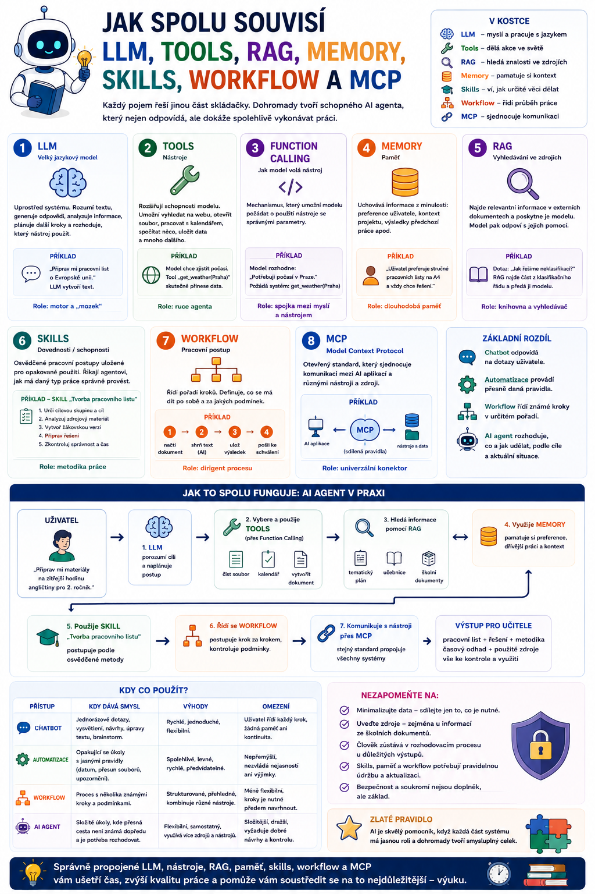

Jazykový model, nástroje, paměť, RAG, skills, workflow, MCP… Když člověk začne číst o AI agentech, může mít velmi rychle pocit, že každý týden vznikne další zkratka, kterou musí znát. Ve skutečnosti ale většina těchto pojmů řeší jinou část stejného problému. Jak vytvořit AI systém, který nejen odpovídá, ale dokáže spolehlivě vykonávat práci.

Začněme od úplného základu: LLM
Uprostřed většiny dnešních agentních systémů stojí LLM – Large Language Model, tedy velký jazykový model.
Je to část systému, která dokáže pracovat s přirozeným jazykem.
Může například porozumět zadání, vytvářet text, analyzovat informace, navrhovat postup nebo rozhodnout, který nástroj by měl být použit.
Můžeme si jej představit jako motor celé soustavy.
Samotný motor ale ještě není automobil.
Stejně tak samotný LLM ještě není AI agent.
Bez dalších částí má omezené možnosti.
Samotný model hlavně pracuje s informacemi
Představme si jednoduchý jazykový model.
Napíšeme:
„Připrav mi pracovní list o Evropské unii.“
Model vytvoří text.
Ale bez dalších schopností automaticky neví:
- jaký je náš tematický plán,
- co jsme probírali minulou hodinu,
- kde máme uložené podklady,
- jaké dokumenty má použít,
- kam má výsledný soubor uložit.
To všechno musí dodat další vrstvy systému.
A právě tam se začínají objevovat ostatní pojmy.
Tools: co může agent skutečně udělat
Tools, tedy nástroje, rozšiřují možnosti jazykového modelu.
Bez nich může model například napsat:
S vhodným nástrojem může systém kalendář skutečně zkontrolovat.
Tool může umožnit například:
- vyhledat na webu,
- otevřít dokument,
- spustit výpočet,
- získat data z databáze,
- vytvořit soubor,
- pracovat s kalendářem.
Model tedy rozhoduje:
A nástroj mu umožní ji získat či provést.
Zjednodušeně:
Tool = konkrétní schopnost něco udělat
Function Calling: jak model o nástroj požádá
S tools velmi úzce souvisí Function Calling.
Model může například dojít k závěru:
Místo vytvoření údajů z vlastní znalosti požádá systém o použití nástroje například ve tvaru:
Aplikace funkci skutečně spustí a výsledek vrátí modelu.
Function Calling tedy řeší:
Memory: co si má systém uchovat
Další problém vznikne ve chvíli, kdy chceme pracovat dlouhodobě.
Řekněme, že agent už ví:
Vždy mají obsahovat řešení.
Uživatel preferuje stručné instrukce.
Pokud bychom tyto informace museli zadávat při každém úkolu znovu, agent by nebyl příliš praktický.
Proto existuje Memory – paměť.
Paměť může uchovávat například:
Důležité je připomenout:
Informace je obvykle uložena mimo model a v pravou chvíli se mu znovu poskytne.
RAG: kde najít potřebné znalosti
Paměť ale není totéž jako znalostní databáze.
Představme si, že potřebujeme odpovědět:
„Jak naše škola řeší neklasifikaci?“
Tuto informaci nechceme ukládat jako osobní paměť uživatele.
Chceme ji najít v:
A právě zde nastupuje RAG – Retrieval-Augmented Generation.
RAG funguje zjednodušeně:
↓
vyhledání relevantního dokumentu
↓
nalezení vhodné části
↓
předání modelu
↓
odpověď
RAG tedy odpovídá především na otázku:
Memory versus RAG
Tohle je dobré rozlišovat.
Paměť může říkat:
RAG může zjistit:
Paměť tedy často uchovává:
RAG hledá:
Technicky mohou používat podobné metody vyhledávání, ale jejich účel je jiný.
Skills: jak má agent určitou práci dělat
Teď agent ví:
Pořád ale zbývá otázka:
Jak má určitý typ práce správně provést?
Tady přicházejí Skills.
Skill může agentovi říct:
Když vytváříš pracovní list, nejprve zjisti cílovou skupinu, potom učební cíl, použij relevantní zdroje, vytvoř žákovskou verzi, připrav řešení a nakonec proveď kontrolu.
Skill tedy zachycuje opakovatelnou dovednost nebo osvědčený způsob práce.
Místo toho, abychom agentovi pokaždé celý postup vysvětlovali v promptu, má tento pracovní návod k dispozici opakovaně.
Workflow: jaké kroky mají následovat
Skill a workflow spolu souvisejí, ale nejsou úplně stejné.
Workflow typicky popisuje konkrétní proces.
Například:
Je to cesta, kterou systém prochází.
Skill může být flexibilnější.
Může například určovat:
Při tvorbě pracovního listu vyber typ aktivit podle cílové skupiny.
Jinými slovy:
zatímco
skill často říká, jak určitou práci kvalitně provést.
V praxi se samozřejmě mohou částečně překrývat.
A to vůbec nevadí.
Technologické názvosloví není cílem.
Cílem je mít spolehlivý pracovní postup.
A proč potřebujeme MCP?
Nyní máme agenta, který by chtěl používat:
Jenže každý systém může mít jiné rozhraní.
Právě tady přichází MCP – Model Context Protocol.
MCP poskytuje standardizovaný způsob, jak může AI aplikace komunikovat s externími nástroji a zdroji.
Velmi zjednodušeně:
↓
MCP
↓
různé nástroje a služby
MCP tedy neřeší, co si agent pamatuje, ani jak má vytvořit pracovní list.
Řeší hlavně:
Jedna školní situace, všechny technologie
Nejlépe to bude vidět na jediném příkladu.
Učitel zadá:
„Připrav mi materiály na zítřejší hodinu angličtiny.“
Co se může stát?
LLM
Porozumí zadání.
Memory
Zjistí například:
Tool
Použije nástroj pro práci s rozvrhem.
MCP
Může být prostředkem, kterým je tento nástroj agentovi zpřístupněn.
RAG
Vyhledá v tematickém plánu:
Potom najde relevantní části učebních materiálů.
Skill
Agent použije schopnost:
která říká, jak kvalitní pracovní list vytvořit.
Workflow
Spustí proces:
Agent
Celý proces koordinuje a podle výsledků jednotlivých kroků rozhoduje, co má udělat dál.
A najednou všechny ty podivné zkratky začínají dávat smysl.
Jednoduchá mapa agentního systému
Můžeme si to shrnout následovně:
Tools → Co dokážu skutečně udělat?
Function Calling → Jak požádám o použití nástroje?
Memory → Co si mám uchovat z minulosti?
RAG → Kde najdu potřebné znalosti?
Skills → Jak umím určitý typ práce dělat?
Workflow → Jaké kroky mají následovat?
MCP → Jak se standardně připojím k nástrojům a datům?
Agent → Jak to všechno použiji k dosažení cíle?
Tohle je podle mě jedna z nejdůležitějších tabulek celé série.
Protože ukazuje, že jednotlivé technologie nejsou soupeři.
Jsou to části jednoho systému.
Agent je koordinátor celé skládačky
Můžeme si představit:
tools jako ruce
memory jako poznámkový blok
RAG jako knihovníka
skills jako naučené pracovní postupy
workflow jako pracovní plán
MCP jako univerzální komunikační rozhraní
a
agenta jako systém, který všechny tyto části koordinuje.
Analogie samozřejmě nesmíme brát technicky doslova.
Ale pro pochopení architektury funguje docela dobře.
A co agentní smyčka?
Ještě nám nesmí vypadnout princip, kterým celá soustava pracuje.
Agent může fungovat podle cyklu:
Například:
Pochop
Potřebuji připravit výuku.
Naplánuj
Zjistím rozvrh a téma.
Proveď
Použiji nástroje a RAG.
Zkontroluj
Mám dostatek informací?
Pokud ano:
Potom:
A nakonec:
Všechny ostatní technologie tedy agent využívá uvnitř svého pracovního cyklu.
Ne každý agent potřebuje všechno
Tohle je velmi důležité.
Po přečtení celé série by člověk mohl dojít k závěru:
Takže správný agent musí mít LLM, RAG, paměť, MCP, deset tools, skills a čtyři workflow.
Nemusí.
Jednoduchý agent může mít:
A může být naprosto dostačující.
Jiný může potřebovat:
MCP má smysl tehdy, když potřebujeme vhodně propojit externí systémy.
Každou komponentu bych přidávala pouze tehdy, když řeší konkrétní problém.
Víc technologií neznamená lepší agent
Je docela snadné postavit systém:
a být na něj náležitě pyšný.
Pak zjistíme, že obyčejný pevný workflow zvládal stejný úkol rychleji a spolehlivěji.
To není vítězství.
Je to velmi moderně provedená komplikace.
Dobrá architektura používá minimum komponent potřebných k vyřešení problému.
Jedna důležitá věc: data nejsou schopnost
Tohle se často plete.
Představme si agenta, který má přístup k učebnici.
To ještě neznamená, že umí vytvořit kvalitní pracovní list.
Má pouze data.
Stejně tak agent může mít skill:
ale bez učebních podkladů nemusí vědět:
Proto potřebujeme rozlišovat:
a
způsob práce.
RAG může dodat obsah.
Skill může dodat pracovní postup.
Teprve jejich kombinace vytvoří kvalitnější výsledek.
Přístup k nástroji také neznamená, že ho agent umí správně použít
Agent může mít nástroj:
To ale neznamená, že by ho měl bez omezení používat.
Potřebujeme také pravidlo:
Před odesláním e-mailu vždy vyžádej potvrzení člověka.
Technická schopnost a oprávnění nejsou totéž jako správný pracovní postup.
To je důvod, proč jsou tak důležité:
Paměť není zdroj pravdy
Podobně:
neznamená:
Paměť může být:
Pro důležitá fakta má být lepší obrátit se na autoritativní zdroj.
Například:
Myslím, že tato směrnice platí od září.
RAG
Najdi aktuální platnou směrnici a ověř datum.
To je mnohem bezpečnější.
RAG není paměť modelu
Stejně tak když model pracuje s deseti tisíci dokumenty pomocí RAG, neznamená to, že:
„se je všechny naučil.“
Dokumenty zůstávají mimo jazykový model.
Systém pouze v pravou chvíli vyhledá relevantní části a vloží je do jeho kontextu.
To je praktické právě proto, že můžeme dokument aktualizovat bez nového trénování modelu.
MCP není agentní magie
Ještě jednou stojí za to připomenout i opačný extrém.
Připojení MCP serveru automaticky nevytvoří kvalitního agenta.
MCP pouze umožní zpřístupnit určité schopnosti.
Stále potřebujeme:
MCP je infrastruktura.
Skills nejsou zárukou správnosti
Ani krásně připravený skill neznamená:
Skill zvyšuje konzistenci a dává systému osvědčený postup.
Samotný jazykový model ale může stále:
- chybně interpretovat situaci,
- přeskočit důležitý detail,
- nesprávně použít zdroj.
Proto i skills potřebují:
Jak agentní systém postupně růst
Rozumný vývoj nemusí začít celou architekturou.
Může vypadat například takto:
Nejdřív zjistíme, zda model samotný zvládá základ úkolu.
↓
2. Instrukce / skill
Standardizujeme způsob práce.
↓
3. Tools
Přidáme schopnosti, které skutečně potřebuje.
↓
4. Workflow
Pevné a opakovatelné části procesu stabilizujeme.
↓
5. RAG
Přidáme vlastní znalostní zdroje.
↓
6. Memory
Začneme uchovávat užitečný dlouhodobý kontext.
↓
7. MCP
Pokud potřebujeme více externích integrací, sjednotíme přístup.
↓
8. Další agenti
Pouze pokud rozdělení práce skutečně přinese výhodu.
Takový růst je mnohem rozumnější než začít architektonickým monstrem.
Ve škole bych postupovala úplně stejně
Například:
AI vytvoří pracovní list podle vloženého textu.
Druhá verze
Dostane standardní skill pro tvorbu materiálů.
Třetí verze
Dokáže si najít potřebné materiály.
Čtvrtá verze
Zná tematický plán.
Pátá verze
Pamatuje si základní pracovní preference učitele.
Šestá verze
Dokáže koordinovat více zdrojů a pracovních procesů.
A teprve potom se z jednoduchého AI pomocníka postupně stává skutečný dlouhodobý učitelský agent.
Celá série v jedné větě
Kdybych měla agentní architekturu vysvětlit jedinou větou, zněla by asi:
Jazykový model pochopí cíl, agent rozhoduje o postupu, tools mu umožňují jednat, RAG mu dodává znalosti, memory uchovává užitečný kontext, skills mu říkají, jak určitou práci dělat, workflow zajišťuje opakovatelné procesy a MCP pomáhá všechny potřebné systémy propojit.
To už je prakticky celá agentní AI v jednom odstavci.
Zapamatujte si
Nemusíte znát všechny technické detaily, abyste dokázali agentním systémům rozumět.
Stačí si u každého pojmu položit jeho základní otázku:
Tools – Co můžu udělat?
Memory – Co si mám uchovat?
RAG – Kde najdu potřebné informace?
Skills – Jak mám tuto práci dělat?
Workflow – Jaké kroky mají následovat?
MCP – Jak se připojím k externím schopnostem?
Agent – Jak tyto možnosti použiji k dosažení cíle?
Jakmile se na to podíváme tímhle způsobem, z nepřehledné sbírky technických zkratek se stane docela logická stavebnice.